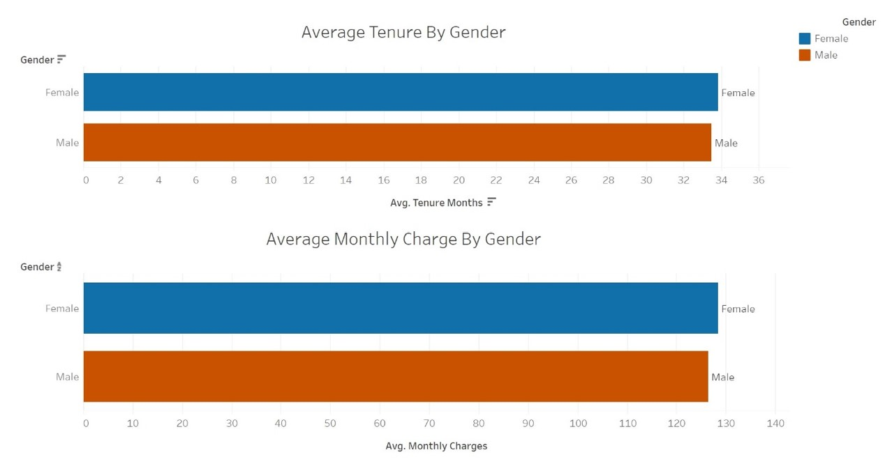

Charges & Tenure By Gender
SQL & Tableau Analysis
Objectives & Questions that will drive the analysis:
• Combine two different datasets together using SQL commands
• Produce a Tableau dashboard using the combined datasets
• What are the average monthly charges and tenure for each gender?
Cleaning & Preparation:
The raw separated datasets included information pertaining to customer demographics as well as detailed consumer services.
The following actions were performed to prepare the data:
• Created a new table with only relevant information from one dataset
• Reformatted column names and values to better merge data
• Performed SQL join to combine datasets into one
Data Analysis and Visualization:
To answer our target question, analysis was done using Tableau filtering and visualizations. Finally, we created an easy-to-understand overview of our analysis via the dashboard below. On it, we have created different actions that can be selected to show specific genders. Access to the dashboard can be found here by clicking this LINK here.

Conclusion:
After combining the datasets and displaying the results in our Tableau dashboard, we can see the answer to our question with ease. Hovering over our top chart, we can see that the average tenure (in months) for those that identify as female is 33.8 months, and the average monthly charge is 128.38 USD. This differs slightly from those that identify as male as the average tenure for males is 33.5 months with a monthly charge of 126.46 USD. If one wanted to see just the information for females or males instead of both, simply click on the legend to highlight the specific gender.
Looking at our results, we can see how the demographics of our consumers support executive decision-making by gender in how there seems to be a slight discrepancy between the average monthly charges and tenure. It would be recommended that further analysis should be conducted to figure out why that is. In the meantime, executives should look into offering incentives or discounts to female consumers to balance the genders. Although with this dashboard, we were able to get a better understanding of our data, it is not without its limitations. Here we only dealt with female and male gender, which excludes consumers who are nonbinary. This could have an impact on our results since we are only looking at two groups when there are more than that. There is also the fact that we looked at averaged monthly charges, but not what those charges included. This means that the different services were not accounted for and that could have played into why there is a difference between the genders’ payments, but for now, we will base out actions off the insights gleaned from this dashboard.